Puss In Boots 2: The Last Wish
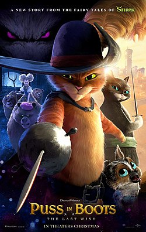
Plot: While hosting a party
in the town of Del Mar, legendary hero and outlaw Puss
in Boots accidentally awakens a sleeping giant.
He subdues the creature but is crushed by a bell.
Waking up in a hospital, the town doctor informs
him that he has lost eight of his nine
lives and suggests Puss should retire. That
night in a bar, Puss meets a black-hooded
wolf, who disarms and wounds him in a
sword fight. Traumatised, Puss flees to the house of cat lady
Mama Luna, where he buries his clothes and meets an optimistic
Chihuahua disguised as a cat whom he calls Perrito.
Goldilocks and her Three Bears Crime Family soon arrive at Luna's home.
Puss In Boots
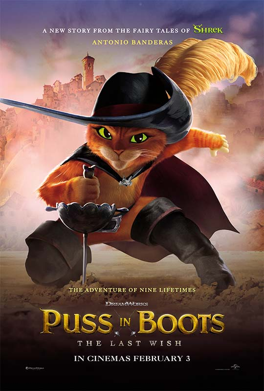
The cat Puss In Boots needs no
introduction. But if you forgot, he was a legend who went
by many names: Diablo gato, The furry lover, El Chupacabra,
Friskie two-times, The ginger Hitman, and of course, Puss In Boots.
Puss was loosely based on the title character of the fairy tale
"Puss in Boots". His design, created by Tom Hester, was based on
real cats. Several characters were used as inspirations for Puss's
characterization, such as Zorro and Indiana Jones. The idea of Puss
as the protagonist of a film was explored after his debut appearance.
Antonio Banderas voices Puss in the English, Spanish, and Italian
dubs of the Shrek franchise.
Kitty Softpaws
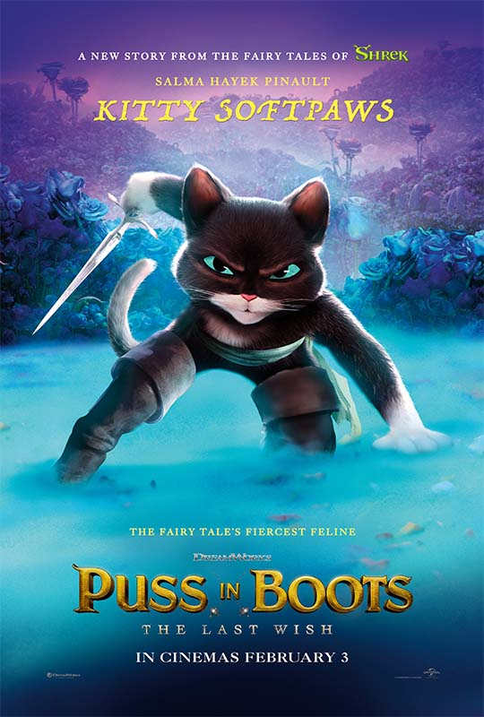
Kitty Softpaws, often referred
to as just Kitty, is the deuteragonist of the Puss in Boots
movies. She is a famous outlaw and Puss in Boots' love interest
in the films Puss in Boots and it's sequel Puss in Boots: The
Last Wish. She is voiced by Salma Hayek and her cat vocals are
provided by Frank Welker. Like Puss, she speaks with a Spanish accent.
Kitty is not seen in The Adventures of Puss in Boots,
as the series takes place before the events of the first film.
Perrito
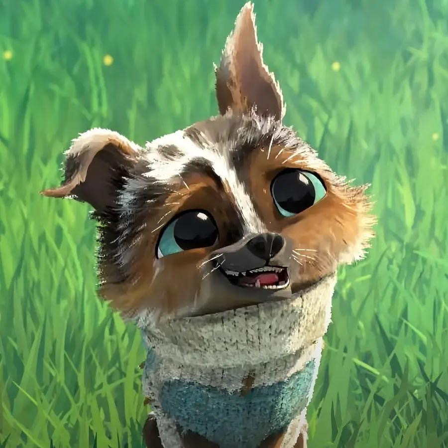
Perrito is the deuteragonist of the
animated film Puss in Boots: The Last Wish, a spin-off of the
Shrek franchise. He is a therapy dog who started out living
at Mama Luna’s house because he disguised himself as a cat.
He met Puss in Boots, and they became fast friends, at least
in Perrito's eyes. He then followed Puss and his lover Kitty
Softpaws to find the Last Wish before Goldilocks and Big Jack
Horner, even though he himself didn't have a wish of his own.
Throughout their journey, he would ultimately touch the hearts
of the cats and fully form their unity, known as "Team Friendship".
He also originally did not have a name that stuck with him, until
he was given his current name by Puss.
Jack Horner
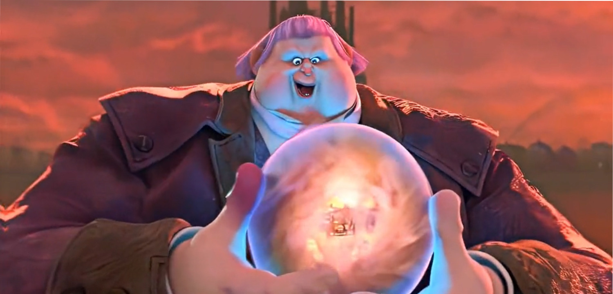
Jack Horner, nicknamed "Big" Jack
Horner and formerly known as "Little" Jack Horner, is the
main antagonist of Puss in Boots: The Last Wish. He is a
pastry chef and crime lord who plans to reach to the
Wishing Star in order to become master of all magic
(meaning that he plans to control magic in existence).
Jack Horner is a cruel, sadistic, spoiled, heartless,
and irredeemable megalomaniac, with a hungry personality,
whose desire to control all magic in existence borders
on obsession that stems from his petty jealousy of how
his story is nothing more than a nursery rhyme compared
to actual fairy tales, and bitterly recalls how people
ignored him in favour of magical beings, like Pinocchio.
Jiminy Cricket
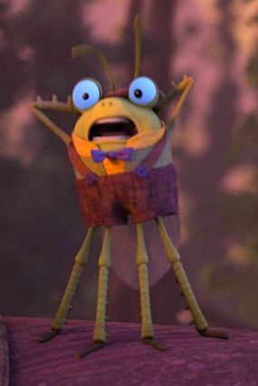
The Talking Cricket is a humble,
philosophical individual who "sits on your shoulder and
judges your actions and the quality of your character".
He means well, and even tries to reform "Big" Jack Horner
by trying to tell him about the value of life. His fragile
nature is shown when seeing the deaths of the Baker's
Dozen, horrified at the sights and how Horner is so
casual about the actions. Despite being a kind individual
who tries to see the good in all people, he has limits
as to who he can try to help. After hearing Horner's
remark about his dead colleagues, the cricket calls
him an "irredeemable monster" with full emotion.
Papa Bear
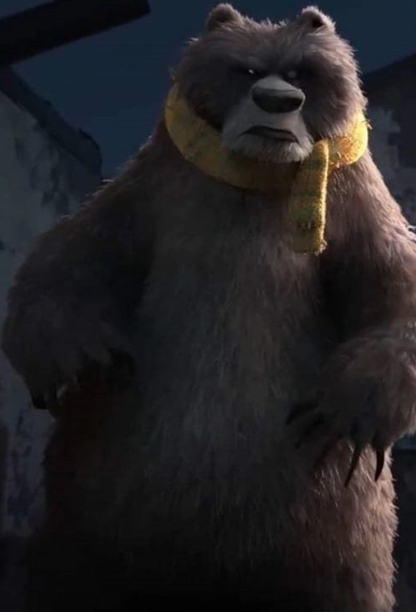
Papa Bear, despite his massive size and fierce exterior, is surprisingly
polite and gentlemanly, though he can certainly be ferocious
and perfectly willing to torture victims (such as the "piano treatment"),
which appears to stem from a love of music given how well he
plays piano and sings passionately while doing so. Papa follows
his adopted daughter's lead and he is a family man who cares
about his wife and children deeply. Papa prefers it when his son
and daughter get along, admonishing Baby whenever he says Goldi isn't
his sister and trusting Goldi's leadership even though she didn't
his adopted daughter's lead and he is a family man who cares
about his wife and children deeply.
Mama Bear
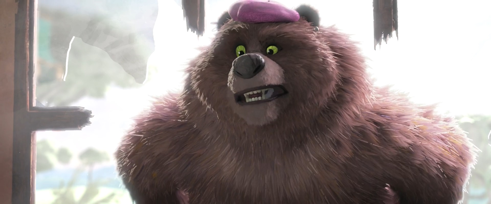
Mama Bear is very much a mama bear in that she loves her
children and will fiercely protect them, and she can put
on such a frightening display that it makes those she
threatens faint in fear. She has a big heart, as she
fondly remembers the day Goldilocks became part of
their family and lovingly recounts the memory to her
adoptive daughter during their quest for the Wishing Star.
When Goldi revealed she wanted the star to wish for
her real family, despite being heartbroken by this,
Mama (as well as Papa and Baby) chose to help Goldi
get the wish if that was what she truly wanted.
Baby Bear
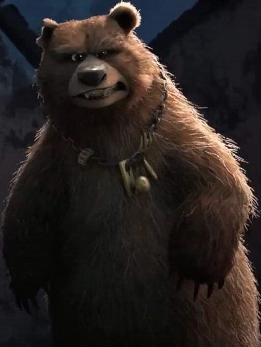
Baby Bear has a clear sibling rivalry
with his adoptive sister, though more than once he declared
that she was not his sister and was just a "porridge-stealing
orphan", indicating Baby was sore about Goldi invading
their home and taking his things though it's possible he
was jealous of Goldi being the "golden child" in their family,
making him second fiddle next to her in their parents' eyes.
Goldilocks
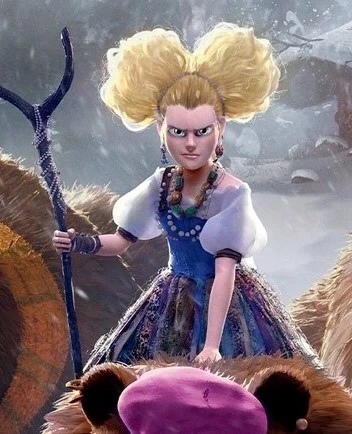
Goldilocks, known as Goldi by her adoptive family and rivals,
is a fierce and determined young woman, seeking what she wants
with great fervor and having a liking for things to be
"just right". Goldi leads her adoptive family, the
Three Bears, as their self-appointed leader, supported
by Papa and Mama Bear while Baby Bear tends to butt
heads with her and they bicker like all brothers and
sisters do. She often has to keep her adoptive
parents focused on the task at hand and often
orders Baby to sniff out their quarry since he has
Death
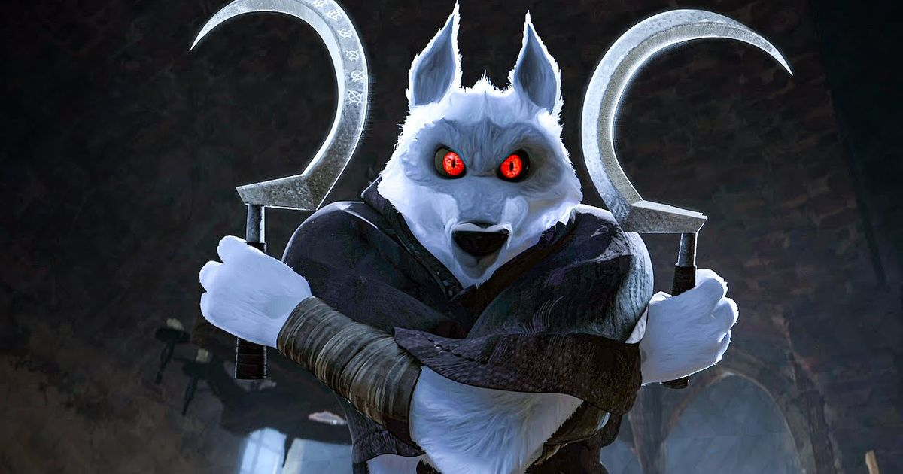
Death is a cunning and sinister individual whose sole purpose is to take
the souls of the deceased. Although he waits in the shadows
for people to die naturally, if someone angers or offends him enough,
he will physically manifest in order to attempt to take their life by force.
Death is sadistic and thrill-seeking, as he takes a degree of pride
and pleasure in his job, and openly admits that he
enjoys striking fear into his victims. This is shown by the
pleasure he took in scaring and provoking Puss in Boots
with his taunts, eerie whistling, and his very presence, and how he
got especially excited when he managed to draw blood on the cat.
Death also admits to having a dislike of cats.